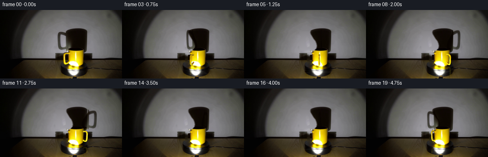
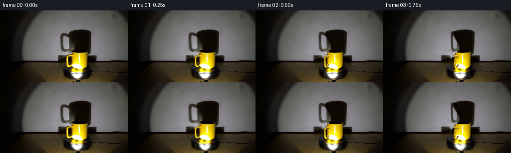

CODING AGENTS AS PIXEL WORLD MODELS
traex/GPT-6.1-Sol · 0077
点击播放 · 原生 RGB 像素
逐轮保存的候选
回放视频、检查图与代码变化。
每份候选均可单独播放。实际图片检查记录在下方工具轨迹中。
候选 01播放与检查图
点击播放 · 原生 RGB 像素

展开代码变化
--- 上一保存版本
+++ 本次保存版本
@@ -0,0 +1,215 @@
+from pathlib import Path
+import math
+import numpy as np
+import cv2
+from PIL import Image, ImageDraw
+from scipy.ndimage import gaussian_filter, map_coordinates
+from scipy.interpolate import CubicSpline
+import artifact_io
+
+ROOT = Path(__file__).resolve().parent
+W,H=256,144
+SS=3
+src=np.asarray(Image.open(ROOT/'first_frame.png').convert('RGB'),dtype=np.float32)
+yy,xx=np.mgrid[:H,:W]
+
+# Smooth local reconstruction of the illuminated wall behind the moving handle shadow.
+def wall_background():
+ valid=(xx>=101)&(xx<=211)&(yy>=22)&(yy<=90)
+ valid &= ~((xx>=118)&(xx<=187)&(yy>=37))
+ valid |= (xx>=118)&(xx<=136)&(yy>=84)&(yy<=88)
+ x=(xx-155)/55; y=(yy-58)/36
+ terms=[x**i*y**j for i in range(5) for j in range(5-i)]
+ mat=np.stack(terms,axis=-1)
+ coef=np.linalg.lstsq(mat[valid],src[valid],rcond=None)[0]
+ return np.clip(mat@coef,0,255)
+wall=wall_background()
+
+# Extract the first shadow's handle and leave its axisymmetric cup shadow in place.
+ys=np.array([36,39,40,43,46,50,55,60,65,70,75,80,83,85,88,91])
+ls=np.array([158,151,146,141,139,140,143,146,150,152,153,152,149,148,147,147])
+left=np.interp(yy,ys,ls)
+region=((xx>=116)&(xx<=153)&(yy>=43)&(yy<=86)).astype(float)
+# Allow a soft penumbra, but never alter the core of the cup shadow.
+remove=np.clip((left+1.0-xx)/3.0,0,1)*region
+remove*=np.clip((yy-43)/2,0,1)*np.clip((87-yy)/3,0,1)
+wall_delta=np.maximum(wall-src,0)*remove[...,None]
+shadow_free=src+wall_delta
+ambient=np.array([7.,2.,0.])
+handle_alpha=np.clip(wall_delta/(shadow_free-ambient+1e-4),0,0.998)
+# Minor chromatic variations in the shadow are kept in these RGB optical depths.
+handle_depth=-np.log(np.maximum(1-handle_alpha,0.002))
+
+# Remove just the original ceramic handle; preserve the whole original mug body.
+# A wide removal for the inpaint operation keeps yellow ceramic from leaking into the restored background.
+large=np.zeros((H,W),np.uint8)
+cv2.fillPoly(large,[np.array([[141,82],[176,82],[177,114],[170,120],[144,120],[131,115],[130,92],[135,88]],np.int32)],255)
+empty=cv2.inpaint(src.astype(np.uint8),large,5,cv2.INPAINT_TELEA).astype(float)
+ceramic=((src[:,:,0]>80)&(src[:,:,1]>50)&(src[:,:,2]<src[:,:,1]*.7))| (src.min(2)>180)
+small=(xx>=131)&(xx<=142)&(yy>=89)&(yy<=114)&ceramic
+small=cv2.dilate(small.astype(np.uint8),np.ones((3,3),np.uint8)).astype(float)
+small*=((xx>=130)&(xx<=142)&(yy>=88)&(yy<=115))
+# At the outermost part of the original handle only, subpixel feathering.
+small=gaussian_filter(small,.42)
+small*=((xx<143)&(yy>=88)&(yy<=115))
+static=shadow_free*(1-small[...,None])+empty*small[...,None]
+
+CX=158.8
+BASE=116.8
+BETA=.215
+CB=math.sqrt(1-BETA*BETA)
+# The initial handle centreline is measured from the first-frame RGB boundaries.
+knots=np.array([[146.6,91.9],[141.,91.15],[136.1,92.2],[134.6,95.4],[134.8,100.6],[135.2,107.6],[137.4,111.35],[140.1,111.0],[143.2,108.9],[146.0,107.3]],float)
+d=np.r_[0,np.cumsum(np.linalg.norm(np.diff(knots,axis=0),axis=1))]
+spline=CubicSpline(d,knots,axis=0,bc_type='natural')
+us=np.linspace(0,d[-1],125)
+pts=spline(us); tang=spline(us,1)
+# 3D coordinates: horizontal, vertical and distance towards the camera.
+center=np.stack([pts[:,0]-CX,(BASE-pts[:,1])/CB,np.zeros(len(pts))],-1)
+tangent=np.stack([tang[:,0],-tang[:,1]/CB,np.zeros(len(pts))],-1)
+tangent/=np.linalg.norm(tangent,axis=1)[:,None]
+n1=np.stack([-tangent[:,1],tangent[:,0],np.zeros(len(pts))],-1)
+n2=np.zeros_like(n1); n2[:,2]=1
+v=np.linspace(0,2*np.pi,20,endpoint=False)
+radius=1.60+0.10*np.cos(us/d[-1]*np.pi)
+normals=n1[:,None,:]*np.cos(v)[None,:,None]+n2[:,None,:]*np.sin(v)[None,:,None]
+verts=center[:,None,:]+radius[:,None,None]*normals
+
+# Sampling ceramic from the supplied image reproduces its real bright glaze and warm yellow tones.
+def sample_rgb(x,y):
+ return np.stack([map_coordinates(src[:,:,i],[y,x],order=1,mode='nearest') for i in range(3)],-1)
+
+# Color across a handle tube is keyed to the camera-facing surface, rather than painted markings.
+# This retains the strong spotlight highlight without falsely making the mug patterned.
+initial_x=CX+verts[:,:,0]
+initial_y=BASE-CB*verts[:,:,1]+BETA*np.abs(verts[:,:,2])
+tex=sample_rgb(initial_x,initial_y)
+# Hidden surface samples in the first image have no dependable ceramic information.
+# Project them onto the visible semicircle.
+tex=np.where((tex[:,:,0]<80)[...,None],sample_rgb(CX+center[:,None,0]+radius[:,None]*np.cos(v)[None,:]*n1[:,None,0],BASE-CB*center[:,None,1]-CB*radius[:,None]*np.cos(v)[None,:]*n1[:,None,1]),tex)
+tex=np.maximum(tex,np.array([90,58,1]))
+triangles=[]
+for k in range(len(us)-1):
+ for j in range(len(v)):
+ jj=(j+1)%len(v)
+ triangles.extend([(k*len(v)+j,(k+1)*len(v)+j,(k+1)*len(v)+jj),(k*len(v)+j,(k+1)*len(v)+jj,k*len(v)+jj)])
+triangles=np.array(triangles)
+
+def mesh_handle(theta):
+ # Positive angle is clockwise as seen looking down onto the turntable.
+ c,s=np.cos(theta),np.sin(theta)
+ p=verts.reshape(-1,3).copy(); n=normals.reshape(-1,3).copy()
+ x=p[:,0].copy(); z=p[:,2].copy()
+ p[:,0]=c*x+s*z; p[:,2]=-s*x+c*z
+ x=n[:,0].copy(); z=n[:,2].copy()
+ n[:,0]=c*x+s*z; n[:,2]=-s*x+c*z
+ # Retain the source glaze while mildly modulating its fixed-light orientation.
+ light=np.array([-.22,-.35,.91]);light/=np.linalg.norm(light)
+ old=normals.reshape(-1,3)@light
+ new=n@light
+ ratio=np.clip((.63+.37*np.maximum(new,0))/(.63+.37*np.maximum(old,0)),.68,1.35)
+ color=np.clip(tex.reshape(-1,3)*ratio[:,None],0,255)
+ q=np.stack([(CX+p[:,0])*SS,(BASE-CB*p[:,1]+BETA*p[:,2])*SS],-1)
+ zdepth=p[:,2]*CB+p[:,1]*BETA
+ col=np.zeros((H*SS,W*SS,3),np.float32)
+ depth=np.full((H*SS,W*SS),-1e6,np.float32)
+ for ids in triangles:
+ a,b,cq=q[ids]
+ lo=np.maximum(np.floor(np.minimum(np.minimum(a,b),cq)).astype(int),0)
+ hi=np.minimum(np.ceil(np.maximum(np.maximum(a,b),cq)).astype(int),[W*SS-1,H*SS-1])
+ if np.any(hi<lo):continue
+ xp,yp=np.meshgrid(np.arange(lo[0],hi[0]+1)+.5,np.arange(lo[1],hi[1]+1)+.5)
+ den=(b[1]-cq[1])*(a[0]-cq[0])+(cq[0]-b[0])*(a[1]-cq[1])
+ if abs(den)<1e-8:continue
+ wa=((b[1]-cq[1])*(xp-cq[0])+(cq[0]-b[0])*(yp-cq[1]))/den
+ wb=((cq[1]-a[1])*(xp-cq[0])+(a[0]-cq[0])*(yp-cq[1]))/den
+ wc=1-wa-wb
+ zz=wa*zdepth[ids[0]]+wb*zdepth[ids[1]]+wc*zdepth[ids[2]]
+ good=(wa>=-1e-5)&(wb>=-1e-5)&(wc>=-1e-5)
+ sl=(slice(lo[1],hi[1]+1),slice(lo[0],hi[0]+1))
+ good &= zz>depth[sl]
+ # The opaque, rotationally symmetric mug hides portions of the handle on its far side.
+ dx=xp/SS-CX; py=yp/SS
+ # Curved lower part of the cup silhouette.
+ rad=np.interp(py,[82,86,107,111,114,116,118],[12,15.7,15.3,14.5,12.7,10.,7.])
+ front=np.sqrt(np.maximum(rad*rad-dx*dx,0))*CB+(BASE-py)/CB*BETA
+ obsc=(np.abs(dx)<rad)&(py>84.5)&(py<118)&(zz<front-.45)
+ good &= ~obsc
+ vals=wa[...,None]*color[ids[0]]+wb[...,None]*color[ids[1]]+wc[...,None]*color[ids[2]]
+ depth[sl][good]=zz[good]
+ col[sl][good]=vals[good]
+ alpha=(depth>-1e5).astype(np.float32)
+ a=cv2.resize(alpha,(W,H),interpolation=cv2.INTER_AREA)
+ rgb=cv2.resize(col,(W,H),interpolation=cv2.INTER_AREA)
+ rgb/=np.maximum(a[...,None],1e-6)
+ return rgb,a
+
+# Warp the shadow of the handle on the wall by the true change in distance to the light.
+# Its azimuth and height change continuously; the cup's own silhouette remains stationary.
+def moving_shadow(theta):
+ c,s=np.cos(theta),np.sin(theta)
+ # Invert x projection for every wall pixel (the light is slightly left of the cup).
+ LZ=217.;D=130.;LX=-6.
+ S0=(D+LZ)/LZ
+ # Original horizontal coordinates relative to the shadow axis at x=162.4.
+ center_wall=CX+(1-S0)*LX
+ X=xx-center_wall
+ # X approximately = (u-center)*c * LZ/(LZ+r*sin(theta)), with r negative on the left.
+ # Solve the rational point-light mapping directly.
+ # World initial X=(u-center_wall)/S0.
+ # At rotation: Xw=LX + (D+LZ)*(c*X0-LX)/(LZ+s*X0).
+ Xwall=xx-CX
+ denom=(Xwall-LX)*s-(D+LZ)*c
+ X0=np.divide(-(D+LZ)*LX-(Xwall-LX)*LZ,denom,out=np.full_like(Xwall,1e4,dtype=float),where=np.abs(denom)>1e-5)
+ u=center_wall+X0*S0
+ factor=LZ/(LZ+s*X0)
+ wallbase=BASE-BETA*D
+ v=wallbase+(yy-wallbase)/np.maximum(factor,.1)
+ mapped=np.stack([map_coordinates(handle_depth[:,:,ch],[v,u],order=1,mode='constant',cval=0) for ch in range(3)],-1)
+ # Finite spotlight produces a soft penumbra, most apparent with an edge-on handle.
+ if abs(c)<.16:
+ mapped=gaussian_filter(mapped,(.5,.7,0))
+ return np.exp(-mapped)
+
+# Fixed-lamp reflections stay fixed while subtle dark turntable surface markings rotate.
+platform=((xx-CX)/33)**2+((yy-127.7)/10.2)**2<1
+plain=platform&(src.max(2)<90)&(yy>=119)
+noise=gaussian_filter(src.mean(2),.5)-gaussian_filter(src.mean(2),2.0)
+
+def frame(i):
+ if i==0:return src.astype(np.uint8)
+ theta=2*np.pi*(i/4)/5.2
+ image=static.copy()
+ trans=moving_shadow(theta)
+ image=ambient+(image-ambient)*trans
+ # Restore the lamp/foreground: wall shadow transport never changes these elements.
+ image=np.where((yy>=89)[...,None],static,image)
+ # Rotate only weak surface detail; never rotate the stationary spotlight reflection.
+ c,s=np.cos(theta),np.sin(theta)
+ px=(xx-CX);pz=(yy-127.7)/.31
+ nx=CX+c*px-s*pz;ny=127.7+.31*(s*px+c*pz)
+ rot=map_coordinates(noise,[ny,nx],order=1,mode='nearest')
+ d=.18*(rot-noise)*plain
+ image+=d[...,None]
+ rgb,a=mesh_handle(theta)
+ # The handle's soft reflection on the glossy black rotating platter.
+ # It is visible mainly at the edge, not over the fixed saturated lamp glint.
+ reflection=np.zeros_like(image)
+ ra=np.zeros((H,W),np.float32)
+ yref=2*BASE-yy
+ for ch in range(3):reflection[:,:,ch]=map_coordinates(rgb[:,:,ch],[yref,xx],order=1,mode='constant',cval=0)
+ ra=map_coordinates(a,[yref,xx],order=1,mode='constant',cval=0)
+ ra=gaussian_filter(ra,.8)*platform*.13*(src.max(2)<140)
+ reflection=gaussian_filter(reflection,(.7,.7,0))
+ image=image*(1-ra[...,None])+reflection*ra[...,None]
+ image=image*(1-a[...,None])+rgb*a[...,None]
+ return np.clip(np.rint(image),0,255).astype(np.uint8)
+
+if __name__=='__main__':
+ (ROOT/'.tmp').mkdir(exist_ok=True)
+ Image.fromarray(np.clip(wall,0,255).astype(np.uint8)).save(ROOT/'.tmp/wall_fit.png')
+ Image.fromarray(np.clip(static,0,255).astype(np.uint8)).save(ROOT/'.tmp/static.png')
+ frames=np.stack([frame(i) for i in range(20)])
+ np.save(ROOT/'.tmp/candidate.npy',frames)
+ artifact_io.save(frames,ROOT)
+ print('Saved',frames.shape,frames.dtype)
候选 02播放与检查图
点击播放 · 原生 RGB 像素

展开代码变化
--- 上一保存版本 +++ 本次保存版本 @@ -26,25 +26,33 @@ wall=wall_background() # Extract the first shadow's handle and leave its axisymmetric cup shadow in place. -ys=np.array([36,39,40,43,46,50,55,60,65,70,75,80,83,85,88,91]) -ls=np.array([158,151,146,141,139,140,143,146,150,152,153,152,149,148,147,147]) -left=np.interp(yy,ys,ls) -region=((xx>=116)&(xx<=153)&(yy>=43)&(yy<=86)).astype(float) -# Allow a soft penumbra, but never alter the core of the cup shadow. -remove=np.clip((left+1.0-xx)/3.0,0,1)*region -remove*=np.clip((yy-43)/2,0,1)*np.clip((87-yy)/3,0,1) -wall_delta=np.maximum(wall-src,0)*remove[...,None] -shadow_free=src+wall_delta ambient=np.array([7.,2.,0.]) -handle_alpha=np.clip(wall_delta/(shadow_free-ambient+1e-4),0,0.998) -# Minor chromatic variations in the shadow are kept in these RGB optical depths. +# Reconstruct the cup's obscured left penumbra from its unobstructed right penumbra. +# The cup is a surface of revolution: the rotating handle is the only changing silhouette. +axis=np.interp(yy,[38,48,70,86],[161.6,162.3,163.0,162.3]) +mx=2*axis-xx +mirrored=np.stack([map_coordinates(src[:,:,ch],[yy,mx],order=1,mode='nearest') for ch in range(3)],-1) +mirwall=np.stack([map_coordinates(wall[:,:,ch],[yy,mx],order=1,mode='nearest') for ch in range(3)],-1) +transmit=np.clip((mirrored-ambient)/np.maximum(mirwall-ambient,1),0,1) +transmit=gaussian_filter(transmit,(.1,1.1,0)) +newbody=ambient+(wall-ambient)*transmit +region=((xx>=116)&(xx<=153)&(yy>=43)&(yy<=87)).astype(float) +remove=np.clip((153-xx)/5.0,0,1)*region +remove*=np.clip((yy-43)/2,0,1)*np.clip((88-yy)/3,0,1) +shadow_free=src*(1-remove[...,None])+newbody*remove[...,None] +handle_alpha=np.clip((shadow_free-src)/np.maximum(shadow_free-ambient,1),0,0.998) handle_depth=-np.log(np.maximum(1-handle_alpha,0.002)) # Remove just the original ceramic handle; preserve the whole original mug body. # A wide removal for the inpaint operation keeps yellow ceramic from leaking into the restored background. large=np.zeros((H,W),np.uint8) cv2.fillPoly(large,[np.array([[141,82],[176,82],[177,114],[170,120],[144,120],[131,115],[130,92],[135,88]],np.int32)],255) -empty=cv2.inpaint(src.astype(np.uint8),large,5,cv2.INPAINT_TELEA).astype(float) +empty=src.copy().astype(float) +# Scanline interpolation preserves the fixed wall/table boundary and the black platter. +for y in range(88,117): + for x in range(130,147): + t=(x-126.)/(183.-126.) + empty[y,x]=(1-t)*src[y,126]+t*src[y,183] ceramic=((src[:,:,0]>80)&(src[:,:,1]>50)&(src[:,:,2]<src[:,:,1]*.7))| (src.min(2)>180) small=(xx>=131)&(xx<=142)&(yy>=89)&(yy<=114)&ceramic small=cv2.dilate(small.astype(np.uint8),np.ones((3,3),np.uint8)).astype(float)
候选 03播放与检查图
可观测工具轨迹
实际执行的命令与返回图片。
命令 1exit 0
/bin/bash -lc "ls -la && cat prompt.txt && printf '\\n---RULES---\\n' && cat GENERATION_RULES.md"
命令 2exit 0
/bin/bash -lc "cat artifact_io.py && python - <<'PY'
from PIL import Image
import numpy as np
im=np.array(Image.open('first_frame.png'))
print(im.shape)
# colored categorized ascii every 3pix
for y in range(0,144,3):
s=''
for x in range(0,256,3):
r,g,b=im[y,x].astype(int)
if r>95 and g>80 and b<g*.65: c='Y'
elif max(r,g,b)<28:c='#'
elif max(r,g,b)<58:c='O'
elif max(r,g,b)<95:c='o'
elif max(r,g,b)<145:c=':'
elif max(r,g,b)<190:c='.'
else:c=' '
s+=c
print(f'{y:3}',s)
PY"命令 3exit 0
/bin/bash -lc "python - <<'PY'
import numpy as np
from PIL import Image
im=np.array(Image.open('first_frame.png')).astype(int)
# print detailed region categorized hue and lum 2pix
for y in range(34,144,2):
s=''
for x in range(104,198):
r,g,b=im[y,x];l=(r+g+b)/3
if r>90 and g>65 and b<.55*g: c='Y' if r<170 else ('W' if r>220 and g>190 else 'y')
elif r>140 and g>120 and b<90:c='y'
elif l<12:c='@'
elif l<24:c='#'
elif l<38:c='O'
elif l<55:c='o'
elif l<75:c=':'
elif l<95:c='-'
elif l<125:c='.'
elif l<165:c='+'
else:c=' '
s+=c
print(f'{y:3} {s}')
print('sample')
for y in [40,48,60,80,85,88,90,94,100,102,104,106,110,115,120,124,126,130,138]:
print(y,[(x,im[y,x].tolist()) for x in [115,125,135,140,144,146,150,156,160,165,170,173,177,180,190]])
PY"命令 4exit 0
/bin/bash -lc "python - <<'PY'
import numpy as np
from PIL import Image
im=np.array(Image.open('first_frame.png')).astype(float)
# output lum full sampling cropped every pixel
for y in range(80,141):
s=''
for x in range(112,202):
r,g,b=im[y,x]; l=0.2126*r+.7152*g+.0722*b
if r>100 and g>65 and b<.55*g: c='Y' if g<140 else 'y' if g<220 else 'v'
elif min(r,g,b)>210: c='W'
else:c='@#Oo:.-+ '[min(8,int(l/23))]
s+=c
print('%3d '%y+s)
PY"命令 5exit 0
/bin/bash -lc "python - <<'PY'
from PIL import Image
import numpy as np
im=np.array(Image.open('first_frame.png')).astype(int)
for y in range(78,140):
row=im[y];yel=(row[:,0]>100)&(row[:,1]>65)&(row[:,2]<row[:,1]*.6);br=row.min(1)>190
def chunks(a):
x=np.where(a)[0];return [list(g[[0,-1]]) for g in np.split(x,np.where(np.diff(x)>1)[0]+1) if len(g)]
print(y,'Y',chunks(yel),'bright',chunks(br))
PY"命令 6exit 0
/bin/bash -lc "python - <<'PY' import importlib.util for m in ['cv2','scipy','numpy','PIL']: print(m,importlib.util.find_spec(m)) PY"
命令 7exit 0
/bin/bash -lc "python - <<'PY'
import numpy as np
from PIL import Image
im=np.array(Image.open('first_frame.png')).astype(float)
for y in range(84,120):
print(y,' '.join('%3d,%3d,%3d'%tuple(im[y,x]) for x in range(131,148)))
PY"命令 8exit 0
/bin/bash -lc "cat > generate.py <<'PY'
from pathlib import Path
import math
import numpy as np
import cv2
from PIL import Image, ImageDraw
from scipy.ndimage import gaussian_filter, map_coordinates
from scipy.interpolate import CubicSpline
import artifact_io
ROOT = Path(__file__).resolve().parent
W,H=256,144
SS=3
src=np.asarray(Image.open(ROOT/'first_frame.png').convert('RGB'),dtype=np.float32)
yy,xx=np.mgrid[:H,:W]
# Smooth local reconstruction of the illuminated wall behind the moving handle shadow.
def wall_background():
valid=(xx>=101)&(xx<=211)&(yy>=22)&(yy<=90)
valid &= ~((xx>=118)&(xx<=187)&(yy>=37))
valid |= (xx>=118)&(xx<=136)&(yy>=84)&(yy<=88)
x=(xx-155)/55; y=(yy-58)/36
terms=[x**i*y**j for i in range(5) for j in range(5-i)]
mat=np.stack(terms,axis=-1)
coef=np.linalg.lstsq(mat[valid],src[valid],rcond=None)[0]
return np.clip(mat@coef,0,255)
wall=wall_background()
# Extract the first shadow's handle and leave its axisymmetric cup shadow in place.
ys=np.array([36,39,40,43,46,50,55,60,65,70,75,80,83,85,88,91])
ls=np.array([158,151,146,141,139,140,143,146,150,152,153,152,149,148,147,147])
left=np.interp(yy,ys,ls)
region=((xx>=116)&(xx<=153)&(yy>=43)&(yy<=86)).astype(float)
# Allow a soft penumbra, but never alter the core of the cup shadow.
remove=np.clip((left+1.0-xx)/3.0,0,1)*region
remove*=np.clip((yy-43)/2,0,1)*np.clip((87-yy)/3,0,1)
wall_delta=np.maximum(wall-src,0)*remove[...,None]
shadow_free=src+wall_delta
ambient=np.array([7.,2.,0.])
handle_alpha=np.clip(wall_delta/(shadow_free-ambient+1e-4),0,0.998)
# Minor chromatic variations in the shadow are kept in these RGB optical depths.
handle_depth=-np.log(np.maximum(1-handle_alpha,0.002))
# Remove just the original ceramic handle; preserve the whole original mug body.
# A wide removal for the inpaint operation keeps yellow ceramic from leaking into the restored background.
large=np.zeros((H,W),np.uint8)
cv2.fillPoly(large,[np.array([[141,82],[176,82],[177,114],[170,120],[144,120],[131,115],[130,92],[135,88]],np.int32)],255)
empty=cv2.inpaint(src.astype(np.uint8),large,5,cv2.INPAINT_TELEA).astype(float)
ceramic=((src[:,:,0]>80)&(src[:,:,1]>50)&(src[:,:,2]<src[:,:,1]*.7))| (src.min(2)>180)
small=(xx>=131)&(xx<=142)&(yy>=89)&(yy<=114)&ceramic
small=cv2.dilate(small.astype(np.uint8),np.ones((3,3),np.uint8)).astype(float)
small*=((xx>=130)&(xx<=142)&(yy>=88)&(yy<=115))
# At the outermost part of the original handle only, subpixel feathering.
small=gaussian_filter(small,.42)
small*=((xx<143)&(yy>=88)&(yy<=115))
static=shadow_free*(1-small[...,None])+empty*small[...,None]
CX=158.8
BASE=116.8
BETA=.215
CB=math.sqrt(1-BETA*BETA)
# The initial handle centreline is measured from the first-frame RGB boundaries.
knots=np.array([[146.6,91.9],[141.,91.15],[136.1,92.2],[134.6,95.4],[134.8,100.6],[135.2,107.6],[137.4,111.35],[140.1,111.0],[143.2,108.9],[146.0,107.3]],float)
d=np.r_[0,np.cumsum(np.linalg.norm(np.diff(knots,axis=0),axis=1))]
spline=CubicSpline(d,knots,axis=0,bc_type='natural')
us=np.linspace(0,d[-1],125)
pts=spline(us); tang=spline(us,1)
# 3D coordinates: horizontal, vertical and distance towards the camera.
center=np.stack([pts[:,0]-CX,(BASE-pts[:,1])/CB,np.zeros(len(pts))],-1)
tangent=np.stack([tang[:,0],-tang[:,1]/CB,np.zeros(len(pts))],-1)
tangent/=np.linalg.norm(tangent,axis=1)[:,None]
n1=np.stack([-tangent[:,1],tangent[:,0],np.zeros(len(pts))],-1)
n2=np.zeros_like(n1); n2[:,2]=1
v=np.linspace(0,2*np.pi,20,endpoint=False)
radius=1.60+0.10*np.cos(us/d[-1]*np.pi)
normals=n1[:,None,:]*np.cos(v)[None,:,None]+n2[:,None,:]*np.sin(v)[None,:,None]
verts=center[:,None,:]+radius[:,None,None]*normals
# Sampling ceramic from the supplied image reproduces its real bright glaze and warm yellow tones.
def sample_rgb(x,y):
return np.stack([map_coordinates(src[:,:,i],[y,x],order=1,mode='nearest') for i in range(3)],-1)
# Color across a handle tube is keyed to the camera-facing surface, rather than painted markings.
# This retains the strong spotlight highlight without falsely making the mug patterned.
initial_x=CX+verts[:,:,0]
initial_y=BASE-CB*verts[:,:,1]+BETA*np.abs(verts[:,:,2])
tex=sample_rgb(initial_x,initial_y)
# Hidden surface samples in the first image have no dependable ceramic information.
# Project them onto the visible semicircle.
tex=np.where((tex[:,:,0]<80)[...,None],sample_rgb(CX+center[:,None,0]+radius[:,None]*np.cos(v)[None,:]*n1[:,None,0],BASE-CB*center[:,None,1]-CB*radius[:,None]*np.cos(v)[None,:]*n1[:,None,1]),tex)
tex=np.maximum(tex,np.array([90,58,1]))
triangles=[]
for k in range(len(us)-1):
for j in range(len(v)):
jj=(j+1)%len(v)
triangles.extend([(k*len(v)+j,(k+1)*len(v)+j,(k+1)*len(v)+jj),(k*len(v)+j,(k+1)*len(v)+jj,k*len(v)+jj)])
triangles=np.array(triangles)
def mesh_handle(theta):
# Positive angle is clockwise as seen looking down onto the turntable.
c,s=np.cos(theta),np.sin(theta)
p=verts.reshape(-1,3).copy(); n=normals.reshape(-1,3).copy()
x=p[:,0].copy(); z=p[:,2].copy()
p[:,0]=c*x+s*z; p[:,2]=-s*x+c*z
x=n[:,0].copy(); z=n[:,2].copy()
n[:,0]=c*x+s*z; n[:,2]=-s*x+c*z
# Retain the source glaze while mildly modulating its fixed-light orientation.
light=np.array([-.22,-.35,.91]);light/=np.linalg.norm(light)
old=normals.reshape(-1,3)@light
new=n@light
ratio=np.clip((.63+.37*np.maximum(new,0))/(.63+.37*np.maximum(old,0)),.68,1.35)
color=np.clip(tex.reshape(-1,3)*ratio[:,None],0,255)
q=np.stack([(CX+p[:,0])*SS,(BASE-CB*p[:,1]+BETA*p[:,2])*SS],-1)
zdepth=p[:,2]*CB+p[:,1]*BETA
col=np.zeros((H*SS,W*SS,3),np.float32)
depth=np.full((H*SS,W*SS),-1e6,np.float32)
for ids in triangles:
a,b,cq=q[ids]
lo=np.maximum(np.floor(np.minimum(np.minimum(a,b),cq)).astype(int),0)
hi=np.minimum(np.ceil(np.maximum(np.maximum(a,b),cq)).astype(int),[W*SS-1,H*SS-1])
if np.any(hi<lo):continue
xp,yp=np.meshgrid(np.arange(lo[0],hi[0]+1)+.5,np.arange(lo[1],hi[1]+1)+.5)
den=(b[1]-cq[1])*(a[0]-cq[0])+(cq[0]-b[0])*(a[1]-cq[1])
if abs(den)<1e-8:continue
wa=((b[1]-cq[1])*(xp-cq[0])+(cq[0]-b[0])*(yp-cq[1]))/den
wb=((cq[1]-a[1])*(xp-cq[0])+(a[0]-cq[0])*(yp-cq[1]))/den
wc=1-wa-wb
zz=wa*zdepth[ids[0]]+wb*zdepth[ids[1]]+wc*zdepth[ids[2]]
good=(wa>=-1e-5)&(wb>=-1e-5)&(wc>=-1e-5)
sl=(slice(lo[1],hi[1]+1),slice(lo[0],hi[0]+1))
good &= zz>depth[sl]
# The opaque, rotationally symmetric mug hides portions of the handle on its far side.
dx=xp/SS-CX; py=yp/SS
# Curved lower part of the cup silhouette.
rad=np.interp(py,[82,86,107,111,114,116,118],[12,15.7,15.3,14.5,12.7,10.,7.])
front=np.sqrt(np.maximum(rad*rad-dx*dx,0))*CB+(BASE-py)/CB*BETA
obsc=(np.abs(dx)<rad)&(py>84.5)&(py<118)&(zz<front-.45)
good &= ~obsc
vals=wa[...,None]*color[ids[0]]+wb[...,None]*color[ids[1]]+wc[...,None]*color[ids[2]]
depth[sl][good]=zz[good]
col[sl][good]=vals[good]
alpha=(depth>-1e5).astype(np.float32)
a=cv2.resize(alpha,(W,H),interpolation=cv2.INTER_AREA)
rgb=cv2.resize(col,(W,H),interpolation=cv2.INTER_AREA)
rgb/=np.maximum(a[...,None],1e-6)
return rgb,a
# Warp the shadow of the handle on the wall by the true change in distance to the light.
# Its azimuth and height change continuously; the cup's own silhouette remains stationary.
def moving_shadow(theta):
c,s=np.cos(theta),np.sin(theta)
# Invert x projection for every wall pixel (the light is slightly left of the cup).
LZ=217.;D=130.;LX=-6.
S0=(D+LZ)/LZ
# Original horizontal coordinates relative to the shadow axis at x=162.4.
center_wall=CX+(1-S0)*LX
X=xx-center_wall
# X approximately = (u-center)*c * LZ/(LZ+r*sin(theta)), with r negative on the left.
# Solve the rational point-light mapping directly.
# World initial X=(u-center_wall)/S0.
# At rotation: Xw=LX + (D+LZ)*(c*X0-LX)/(LZ+s*X0).
Xwall=xx-CX
denom=(Xwall-LX)*s-(D+LZ)*c
X0=np.divide(-(D+LZ)*LX-(Xwall-LX)*LZ,denom,out=np.full_like(Xwall,1e4,dtype=float),where=np.abs(denom)>1e-5)
u=center_wall+X0*S0
factor=LZ/(LZ+s*X0)
wallbase=BASE-BETA*D
v=wallbase+(yy-wallbase)/np.maximum(factor,.1)
mapped=np.stack([map_coordinates(handle_depth[:,:,ch],[v,u],order=1,mode='constant',cval=0) for ch in range(3)],-1)
# Finite spotlight produces a soft penumbra, most apparent with an edge-on handle.
if abs(c)<.16:
mapped=gaussian_filter(mapped,(.5,.7,0))
return np.exp(-mapped)
# Fixed-lamp reflections stay fixed while subtle dark turntable surface markings rotate.
platform=((xx-CX)/33)**2+((yy-127.7)/10.2)**2<1
plain=platform&(src.max(2)<90)&(yy>=119)
noise=gaussian_filter(src.mean(2),.5)-gaussian_filter(src.mean(2),2.0)
def frame(i):
if i==0:return src.astype(np.uint8)
theta=2*np.pi*(i/4)/5.2
image=static.copy()
trans=moving_shadow(theta)
image=ambient+(image-ambient)*trans
# Restore the lamp/foreground: wall shadow transport never changes these elements.
image=np.where((yy>=89)[...,None],static,image)
# Rotate only weak surface detail; never rotate the stationary spotlight reflection.
c,s=np.cos(theta),np.sin(theta)
px=(xx-CX);pz=(yy-127.7)/.31
nx=CX+c*px-s*pz;ny=127.7+.31*(s*px+c*pz)
rot=map_coordinates(noise,[ny,nx],order=1,mode='nearest')
d=.18*(rot-noise)*plain
image+=d[...,None]
rgb,a=mesh_handle(theta)
# The handle's soft reflection on the glossy black rotating platter.
# It is visible mainly at the edge, not over the fixed saturated lamp glint.
reflection=np.zeros_like(image)
ra=np.zeros((H,W),np.float32)
yref=2*BASE-yy
for ch in range(3):reflection[:,:,ch]=map_coordinates(rgb[:,:,ch],[yref,xx],order=1,mode='constant',cval=0)
ra=map_coordinates(a,[yref,xx],order=1,mode='constant',cval=0)
ra=gaussian_filter(ra,.8)*platform*.13*(src.max(2)<140)
reflection=gaussian_filter(reflection,(.7,.7,0))
image=image*(1-ra[...,None])+reflection*ra[...,None]
image=image*(1-a[...,None])+rgb*a[...,None]
return np.clip(np.rint(image),0,255).astype(np.uint8)
if __name__=='__main__':
(ROOT/'.tmp').mkdir(exist_ok=True)
Image.fromarray(np.clip(wall,0,255).astype(np.uint8)).save(ROOT/'.tmp/wall_fit.png')
Image.fromarray(np.clip(static,0,255).astype(np.uint8)).save(ROOT/'.tmp/static.png')
frames=np.stack([frame(i) for i in range(20)])
np.save(ROOT/'.tmp/candidate.npy',frames)
artifact_io.save(frames,ROOT)
print('Saved',frames.shape,frames.dtype)
PY
python generate.py"命令 9exit 0
/bin/bash -lc "python - <<'PY'
import numpy as np
from PIL import Image
from generate import mesh_handle,frame,src,static
f=np.load('.tmp/candidate.npy')
print('Changes:')
for i in range(1,20):
print(i,'diff0',np.abs(f[i].astype(float)-f[0]).mean().round(2),'diffprev',np.abs(f[i].astype(float)-f[i-1]).mean().round(2),'yellow_pixels',((f[i,:120,:,0]>100)&(f[i,:120,:,1]>65)&(f[i,:120,:,2]<f[i,:120,:,1]*.6)).sum())
for i in [0,1,3,5,8,10,15,19]:
print('\\nFRAME',i)
for y in range(36,121,3):
s=''
for x in range(112,198):
r,g,b=f[i,y,x].astype(float);l=.2126*r+.7152*g+.0722*b
if r>80 and g>50 and b<g*.7: ch='Y' if g<130 else 'y' if g<220 else 'v'
elif min(r,g,b)>190:ch='W'
else:ch='@#Oo:.-+ '[min(8,int(l/23))]
s+=ch
print(f'{y:3} {s}')
rgb,a=mesh_handle(0)
t=np.uint8(np.clip(static*(1-a[...,None])+rgb*a[...,None],0,255))
Image.fromarray(t).save('.tmp/render0.png')
print('Handle0 rows')
for y in [90,91,92,94,96,100,106,110,112,114]:
print(y,[(x,round(a[y,x],2),rgb[y,x].astype(int).tolist(),src[y,x].astype(int).tolist()) for x in range(132,147)])
PY"命令 10exit 0
/bin/bash -lc "cp generate.py .tmp/generate_v1.py
python - <<'PY'
p='generate.py'
s=open(p).read()
a=s.index('ys=np.array(');b=s.index('# Remove just the original ceramic',a)
s=s[:a]+'''ambient=np.array([7.,2.,0.])
# Reconstruct the cup's obscured left penumbra from its unobstructed right penumbra.
# The cup is a surface of revolution: the rotating handle is the only changing silhouette.
axis=np.interp(yy,[38,48,70,86],[161.6,162.3,163.0,162.3])
mx=2*axis-xx
mirrored=np.stack([map_coordinates(src[:,:,ch],[yy,mx],order=1,mode='nearest') for ch in range(3)],-1)
mirwall=np.stack([map_coordinates(wall[:,:,ch],[yy,mx],order=1,mode='nearest') for ch in range(3)],-1)
transmit=np.clip((mirrored-ambient)/np.maximum(mirwall-ambient,1),0,1)
transmit=gaussian_filter(transmit,(.1,1.1,0))
newbody=ambient+(wall-ambient)*transmit
region=((xx>=116)&(xx<=153)&(yy>=43)&(yy<=87)).astype(float)
remove=np.clip((153-xx)/5.0,0,1)*region
remove*=np.clip((yy-43)/2,0,1)*np.clip((88-yy)/3,0,1)
shadow_free=src*(1-remove[...,None])+newbody*remove[...,None]
handle_alpha=np.clip((shadow_free-src)/np.maximum(shadow_free-ambient,1),0,0.998)
handle_depth=-np.log(np.maximum(1-handle_alpha,0.002))
''' + s[b:]
a=s.index('empty=cv2.inpaint');b=s.index('ceramic=',a)
s=s[:a]+'''empty=src.copy().astype(float)
# Scanline interpolation preserves the fixed wall/table boundary and the black platter.
for y in range(88,117):
for x in range(130,147):
t=(x-126.)/(183.-126.)
empty[y,x]=(1-t)*src[y,126]+t*src[y,183]
''' + s[b:]
open(p,'w').write(s)
PY
python generate.py"命令 11exit 0
/bin/bash -lc "python - <<'PY'
import numpy as np
from generate import frame,src,static,shadow_free,wall,handle_depth
for i in [1,5,10,19]:
f=frame(i)
print('FRAME',i)
for y in range(39,118,3):
s=''
for x in range(116,203):
r,g,b=f[y,x].astype(float);l=.2126*r+.7152*g+.0722*b
if r>80 and g>50 and b<g*.7:ch='Y' if g<130 else 'y' if g<220 else 'v'
elif min(r,g,b)>190:ch='W'
else:ch='@#Oo:.-+ '[min(8,int(l/23))]
s+=ch
print(f'{y:3} {s}')
print('static handle pixels')
for y in [88,89,90,91,92,94,100,111,114]:
print(y,static[y,130:145].astype(int).tolist())
PY"命令 12exit 0
/bin/bash -lc "python - <<'PY'
from PIL import Image
import numpy as np
from pathlib import Path
first=np.asarray(Image.open('first_frame.png').convert('RGB'))
frames=np.stack([np.asarray(Image.open(f'frames/{i:02d}.png').convert('RGB')) for i in range(20)])
assert frames.shape==(20,144,256,3) and frames.dtype==np.uint8
assert np.array_equal(first,frames[0])
packed=np.load('pixels.npz')['pixels']
assert packed.shape==(144,256,20)
# Verify that the locked frame is unchanged outside the demonstrated apparatus.
mask=np.ones((144,256),bool);mask[38:143,116:210]=False
print('Verified 20 RGB frames, exact first frame, packed output. Outside dynamic area maximum change:',np.max(np.abs(frames[:,mask].astype(int)-first[mask].astype(int))))
print('Output files:',[(p.name,p.stat().st_size) for p in [Path('pixels.npz'),Path('index.html'),Path('generate.py')]])
PY"保存候选 3 份；完成命令 12 次；可验证图片返回 0 张。原始 API 响应与完整日志保留在本地。